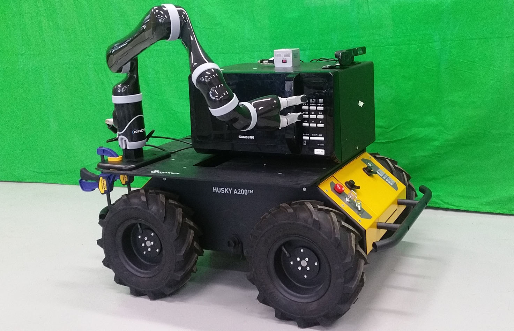

Summer interns (former and current):
- Funda Hatice Oztoklu (UNIST), 2022.
- Tural Usubov (UNIST), 2022.
- Man Mai (UNIST), 2019.
- Yifan Ding (UC Berkeley), 2018.
- Carl Martin Krokeide, Norwegian University of Science and Technology (NTNU), 2018.
- Carlos Pérez Muñoz, University of Málaga, 2018.
- Minh Duc Tran, Lehigh University, 2018.
- Hyeok Sung Kwon, Chungbuk National University, 2018.
- Geunil Song, Kyungpook National University, 2018.
- Aybek Smagulov, UNIST, 2018.
- Sanzhar Aubakir, UNIST, 2018.
- Tomàš Kello, Czech Technical University in Prague, 2017.
- Sebastian Golos, Cardiff University, 2017.
- Alibek Taalaibek uulu, UNIST, 2017.
|
Teaching:
- Artificial Intelligence (Fall 2022)
- Autonomous Robots (Fall 2022)
- Intelligent Robots (Spring 2021)
- Artificial Intelligence Programming II (Fall 2021)
- Machine Learning (Fall 2020)
- Data Structures (Spring 2018)
|
|
Previous Affiliations:
|
Research Equipment:
|
Selected Projects:
-
Extended Goal Recognition Design.
Goal recognition design (GRD) is the task of modifying environments to aid observers in recognizing the objectives of agents during online observations. We propose a new GRD framework called extended goal recognition design (EGRD) for multiple goal recognition in case an agent aims for a sequence of goals instead of just one goal. In EGRD, we can use first-order computation tree logic to formulate goal conditions that can be weaker than exact goal recognition. The objective of EGRD is to modify an environment to minimize the worst case distinctiveness of a goal condition that describes how an agent can reach a set of goals.
|
|
-
High-Density Parking for Autonomous Vehicles.
Research in high-density parking (HDP) focuses on how to increase the capacity of parking lots by allowing vehicles to block each other but temporarily give way to other vehicles by driving autonomously upon request. Previous works on HDP did not consider mixing different parking strategies and ignored the possibility of gridlock when multiple vehicles move simultaneously. In this work, we propose the design of autonomous parking lots, which allows the deployment of different parking strategies in different regions in a parking lot. We present algorithms for checking whether adding a vehicle to an autonomous parking lot can lead to gridlock. Our simulation shows that autonomous parking lots can hold 60% more vehicles given the same amount of space.
|

|
-
Dynamic Robot Chains.
When a team of robots moves many objects continuously, carrying objects from one place to another by individual robots may not be the most efficient way of transportation. We design new kinds of mobile robots that can pass objects at a distance (e.g., mobile conveyor robots) and program them to form robot chains that connect the initial location of objects to the destination. A robot chain can achieve a much higher throughput when transferring many objects along the robot chain simultaneously. Our research on dynamic robot chains focuses on designing aerial and ground robots with different mechanisms of establishing robot chains on demand. Moreover, we study how to deploy dynamic robot chain networks in foraging tasks in which robots have to search for resources such as minerals, water, and fuels that are distributed in an arena and bring them back to a collection zone.
|
|
-
Planning and Scheduling of Mobile Robots with Production Machinery.
Recent advances in warehouse robots, notably the automated guided vehicles (AGVs) developed by Amazon Robotics (formerly Kiva Systems), have revolutionized the operations of large distribution centers of online retailers. Inspired by these systems, we designed new robotic systems that combine mobile robots with production machinery such that the manufacturing process can overlap with the delivery process. The key to unlocking the power of these robotic systems is a better scheduling algorithm. In the end, we are interested in designing high throughput robotic systems using better scheduling and planning algorithms.
|

|
-
Motion Planning with Precise Arrival Time and Arrival Velocity.
Fully autonomous vehicles are technologically feasible with the current generation of hardware, as demonstrated by recent robot car competitions. While the control of these autonomous vehicles is good enough for driving on today's roads, more precise control of autonomous vehicles can lead to better utilization of road surfaces and reduce traffic congestion. We theoretically examined the relationship between the precision of cars' motion control and the throughput of an intersection. We also developed a constant-time reachability-checking algorithm for checking whether an autonomous vehicle can arrive at a given target location on a trajectory at a given arrival time and velocity.
|
|
-
Autonomous Traffic Management.
Looking ahead to the time when autonomous cars will be common,
we study how to utilize the capacity of autonomous vehicles to make transportation systems
much more efficient. Dresner and Stone proposed an intersection control protocol
for autonomous vehicle traffic called Autonomous Intersection Management (AIM),
which is more efficient than traffic signals and stop signs.
In this project, we expand the scope of AIM to autonomous traffic management
in road networks and aim to find out the best transportation infrastructure
for traffic that consists of a mix of autonomous vehicles and non-autonomous vehicles.
|
|
-
Composite Strategies.
To create better agents in multiagent environments, one may want to examine the observed behaviors of existing agents in order to combine their best skills. But the agents being observed may exhibit incompatible behaviors---the agents choose to do different things in some situations---and it is not immediately clear which behavior is better. We proposed a technique to identify the best subset of observed behaviors, in forms of interaction traces, that can be combined together to form a new strategy called composite strategy that potentially outperforms all agents being observed. In our experiments, the performance of nearly all agents increased after augmenting with composite strategies.
|
|
-
Noise Detection in Non-Zero-Sum Games.
An important question in many multiagent systems is how self-interested agents
can resolve conflicts and coordinate with each other to accomplish a task.
While existing strategies such as Tit-For-Tat and Pavlov work well in simple
games such as Iterated Prisoner's Dilemma (IPD), they perform badly in the presence
of noise, which randomly changes the agents' actions or communications and
causes huge problems in maintaining cooperation among agents.
To deal with this long-standing problem of noise in the study of the evolution of
cooperation, we proposed several noise detection techniques and
demonstrated that these techniques is very effective in IPD and other non-zero-sum games.
|
|
-
AI Planning with Volatile Information.
In many planning problems (e.g., robotic task planning
and web service composition), an agent may need to acquire external
information during planning. An important issue in planning with
external information is information volatility---the collected
information may change or expire before the termination of the
planning process. For example, a web-based trip planner can generate
incorrect travel plans if it does not know the information provided
by an airline company has changed. To address this problem,
we proposed several query management strategies for handling
volatile data and theoretically analyzed the conditions under
which the solutions returned by the planning process remain valid.
|
|
|
Selected Publications:
-
T.-C. Au.
A Dynamic Programming Algorithm for Grid-based Formation Planning of Multiple Vehicles.
In Proceedings of the IEEE/RSJ International Conference on Intelligent Robots and Systems (IROS), 2023.
[pdf]
[bibtex]
[video]
[code].
-
M. Park and T.-C. Au.
Challenges in Using Drone Swarms as Video Game Platforms.
In Proceedings of Human Multi-Robot Interaction Workshop at IROS, 2023.
[pdf]
[bibtex]
-
D. Lee, Q. Lu and T.-C. Au.
Dynamic Robot Chain Networks for Swarm Foraging.
In Proceedings of the International Conference on Robotics and Automation (ICRA), 2022.
[pdf]
[bibtex]
[video].
-
T.-C. Au.
Extended Goal Recognition Design with First-Order Computation Tree Logic.
In Proceedings of the 36th AAAI Conference on Artificial Intelligence (AAAI), 2022.
[pdf]
[bibtex]
[appendix]
[slide]
[code].
-
T.-C. Au.
Gridlock-free Autonomous Parking Lots for Autonomous Vehicles.
In Proceedings of the IEEE/RSJ International Conference on Intelligent Robots and Systems (IROS), 2021.
[pdf]
[bibtex]
[video].
-
J. Hwang, S. Ko and T.-C. Au.
Calibrating Dynamic Traffic Assignment Models by Parallel Search using Active-CMA-ES.
In Proceedings of IEEE International Conference on Intelligent Transportation (ITSC), 2021.
[pdf]
[bibtex].
-
D. Lee, Q. Lu and T.-C. Au.
Multiple-Place Swarm Foraging with Dynamic Robot Chains.
In Proceedings of the International Conference on Robotics and Automation (ICRA), 2021.
[pdf]
[bibtex]
[video].
-
T.-C. Au.
Extending the Range of Drone-based Delivery Services by Exploration.
In arXiv, 2020.
[link]
-
D. Lee and T.-C. Au.
Scheduling of Mobile Workstations for Overlapping Production Time and Delivery Time.
In Proceedings of the IEEE/RSJ International Conference on Intelligent Robots and Systems (IROS), 2019.
[pdf]
[bibtex]
[video].
-
T. V. Nguyen and T.-C. Au.
A Constant-Time Algorithm for Checking Reachability of Arrival Times and Arrival Velocities of Autonomous Vehicles.
In Proceedings of the IEEE Intelligent Vehicles Symposium (IV), 2019.
[pdf]
[bibtex].
-
J. Im, C. Yoo, D. Cho, K. Kim, J. Lee, D.-H. Cha and T.-C. Au.
Deep learning-based monitoring and forecast of the intensity of tropical cyclones.
In Proceedings of the IEEE Geoscience and Remote Sensing Society (IGARSS), 2019.
-
H. Moon, J. Martinez-Carranza, T. Cieslewski, M. Faessler, D. Falanga, A. Simovic, D. Scaramuzza, S. Li, M. Ozo, C. D. Wagter, G. d. Croon, S. Hwang, S. Jung, H. Shim, H. Kim, M. Park, T.-C. Au, G. Lee, and S. J. Kim.
Autonomous Drone Racing: Challenges and Implemented Technologies.
In Intelligent Service Robotics (JIST), 2019.
[pdf]
[bibtex].
-
D. Nguyen and T.-C. Au.
Learning to Generate Backup Paths in Cooperative Transportation of Human-Robot Teams.
In Proceedings of the ICRA Workshop on Robot Teammates Operating in Dynamic, Unstructured Environments (RT-DUNE), 2018.
[pdf]
[bibtex].
-
T.-C. Au, B. Banerjee, P. Dasgupta, and P. Stone.
Multirobot Systems.
In IEEE Intelligent Systems, 2017.
-
T. V. Nguyen, D. Nguyen and T.-C. Au.
Learning of Vehicular Performance Models for Longitudinal Motion Planning to Satisfy Arrival Requirements.
In Proceedings of the IEEE/RSJ International Conference on Intelligent Robots and Systems (IROS), 2017.
[pdf]
[bibtex].
-
T. V. Nguyen and T.-C. Au.
Extending the Range of Delivery Drones by Exploratory Learning of Energy Models.
In Proceedings of the International Joint Conference on Autonomous Agents and Multiagent Systems (AAMAS), 2017. Short paper.
[pdf]
[bibtex].
-
D. Lee and T.-C. Au.
Graph-based Scheduling Algorithms for Mobile Workstations.
In Proceedings of IJCAI Workshop on Autonomous Mobile Service Robots, 2016.
-
D. Lee and T.-C. Au.
Automatic Configuration of Mobile Conveyor Lines.
In Proceedings of the International Conference on Robotics and Automation (ICRA), 2016.
[pdf]
[bibtex].
-
T. V. Nguyen and T.-C. Au.
Instance-based Learning of Vehicular Performance Models.
In Proceedings of IROS Workshop on Machine Learning in Planning and Control of Robot Motion (MLPC), 2015.
-
T.-C. Au and T. V. Nguyen.
Augmented Motion Plans for Planning in Uncertain Terrains.
In IJCAI International Workshop on Planning and Scheduling for Space (IWPSS), pp. 2-7, 2015.
[pdf]
[bibtex].
-
T. V. Nguyen and T.-C. Au.
Motion Planning for Arrival Time and Velocity Requirements on Non-Homogeneous Terrains.
In ICAPS Workshop on Planning and Robotics (PlanRob), 2015.
-
T.-C. Au, S. Zhang, and P. Stone.
Autonomous Intersection Management for Semi-Autonomous Vehicles.
In Handbook of Transportation, Routledge, Taylor & Francis Group, 2015.
[pdf]
[bibtex].
-
T.-C. Au, S. Zhang, and P. Stone.
Semi-Autonomous Intersection Management.
In Proceedings of the Thirteenth International Joint Conference on Autonomous Agents and Multiagent Systems (AAMAS), pp. 1451-1452, 2014. Short paper.
[pdf]
[bibtex].
-
T.-C. Au, S. Zhang, and P. Stone.
Intersection Management with Constraint-based Reservation Systems.
In Proceedings of AAMAS 2014 Workshop on Autonomous Robots and Multirobot Systems (ARMS), 2014.
-
T.-C. Au, C.-L. Fok, S. Vishwanath, C. Julien, and P. Stone.
Evasion Planning for Autonomous Vehicles at Intersections.
In IEEE/RSJ International Conference on Intelligent Robots and Systems (IROS 2012), 2012.
[pdf]
[bibtex].
- D. Fajardo, T.-C. Au, S. T. Waller, P. Stone, and D. Yang.
Automated Intersection Control: Performance of a Future Innovation Versus Current Traffic Signal Control. In Transportation Research Record : Journal of the Transportation Research Board, 2259,
pp. 223-232,
2012.
[pdf]
[bibtex].
-
C.-L. Fok, M. Hanna, S. Gee, T.-C. Au, P. Stone, C. Julien, and S. Vishwanath.
A Platform for Evaluating Autonomous Intersection Management Policies.
In ACM/IEEE Third International Conference on Cyber-Physical Systems (ICCPS),
pp. 87-96,
2012.
[pdf]
[bibtex].
-
T.-C. Au, M. Quinlan, and P. Stone.
Setpoint Scheduling for Autonomous Vehicle Controllers.
In IEEE International Conference on Robotics and Automation (ICRA),
pp. 2055-2060,
2012.
[pdf]
[bibtex].
-
T.-C. Au, N. Shahidi, and P. Stone.
Improving Transportation Efficiency for Sustainable Society by Autonomous Traffic Management.
In Sustainability at UT Austin 2011 Symposium,
The University of Texas at Austin,
September 2011.
[pdf]
[bibtex].
-
M. Hausknecht, T.-C. Au, P. Stone, D. Fjardo, and S. T. Waller.
Dynamic Lane Reversal in Autonomous Traffic Management.
In IEEE Intelligent Transportation Systems Conference (ITSC 2011).
[pdf]
[bibtex].
-
M. Hausknecht, T.-C. Au, and P. Stone.
Autonomous Intersection Management: Multi-Intersection Optimization.
In IEEE/RSJ International Conference on Intelligent Robots and Systems (IROS 2011).
[pdf]
[bibtex].
-
T.-C. Au, N. Shahidi, and P. Stone.
Enforcing Liveness in Autonomous Traffic Management.
In Proceedings of the Twenty-Fifth Conference on Artificial Intelligence (AAAI-11),
pp. 1561-1564,
August 2011.
[pdf]
[bibtex]
[proofs].
- N. Shahidi, T.-C. Au, and P. Stone.
Batch Reservations in Autonomous Intersection Management.
In Proceedings of the Tenth International Joint Conference on Autonomous Agents and Multiagent Systems (AAMAS 2011),
May 2011. Short paper.
[pdf]
[bibtex].
-
T.-C. Au and P. Stone.
Motion Planning Algorithms for Autonomous Intersection Management.
In AAAI 2010 Workshop on Bridging The Gap Between Task And Motion Planning (BTAMP),
2010.
[pdf]
[bibtex].
-
M. Quinlan, T.-C. Au, J. Zhu, N. Stiurca, and P. Stone.
Bringing Simulation to Life: A Mixed Reality Autonomous Intersection.
In Proceedings of IEEE/RSJ International Conference on Intelligent Robots and Systems (IROS 2010),
October 2010.
[pdf]
[bibtex]
[video].
(The corresponding workshop paper in ICAPS-10: [pdf])
- T.-C. Au, U. Kuter, and D. Nau.
Planning for Interactions among Autonomous Agents.
In International Workshop on Programming Multi-Agent Systems (ProMAS),
2009.
[pdf]
[bibtex].
- T.-C. Au, S. Kraus, and D. Nau. Synthesis of Strategies from Interaction Traces. In Proceedings of the Seventh International Joint Conference on Autonomous Agents and Multiagent Systems (AAMAS'08), pp. 855-862, May 2008. [pdf] [data] [bibtex].
- T.-C. Au and D. Nau. Is it Accidental or Intentional? A Symbolic Approach to the Noisy Iterated Prisoner's Dilemma. The Iterated Prisoners' Dilemma: 20 Years on, pp.231-262, World Scientific, 2007. [pdf] [bibtex].
- T.-C. Au, S. Kraus, and D. Nau. Symbolic noise detection in the noisy iterated chicken game and the noisy iterated battle of the sexes. In First International Conference on Computational Cultural Dynamics (ICCCD-2007), pp. 16-25, August 2007. [pdf] [bibtex].
- T.-C. Au. Dynamic Programming with Stochastic Opponent Models in Social Games: A Preliminary Report. In First International Conference on Computational Cultural Dynamics (ICCCD-2007), pp. 9-15, August 2007. [pdf] [bibtex].
- T.-C. Au and D. Nau. Reactive Query Policies: A Formalism for Planning with Volatile External Information. IEEE Symposium on Computational Intelligence and Data Mining (CIDM), pp. 243-250, 2007. [pdf] [bibtex].
- T.-C. Au and D. Nau. The Incompleteness of Planning with Volatile External Information. In Proceedings of the European Conference on Artificial Intelligence (ECAI), August 2006. [pdf] [bibtex].
- T.-C. Au and D. Nau. Maintaining Cooperation in Noisy Environments. In Proceedings of the Twenty-First National Conference on Artificial Intelligence (AAAI-06). NECTAR paper. pp. 1561-1564, 2006. [pdf] [bibtex].
- T.-C. Au and D. Nau. Accident or Intention: That is the Question (in the Noisy Iterated Prisoner's Dilemma). In Proceedings of the Fifth International Joint Conference on Autonomous Agents and Multiagent Systems (AAMAS'06). pp. 561-568, May 2006. [pdf] [bibtex].
- T.-C. Au, U. Kuter and D. Nau. Web Service Composition with Volatile Information. In Proceedings of the 4th International Semantic Web Conference (ISWC-2005), pp. 52-66, 2005. [pdf] [bibtex].
- D. Nau, T.-C. Au, O. Ilghami, U. Kuter, H. Muñoz-Avila, J. W. Murdock, D. Wu, and F. Yaman. Applications of SHOP and SHOP2. IEEE Intelligent Systems 20:2, pp. 34-41, 2005. [pdf] [html] [bibtex].
- T.-C. Au, D. Nau, and V. Subrahamanian. Utilizing volatile external information during planning. In Proceedings of the European Conference on Artificial Intelligence (ECAI), pp. 647-651, August 2004. [pdf] [bibtex].
- D. Nau, T.-C. Au, O. Ilghami, U. Kuter, J. W. Murdock, D. Wu, and F. Yaman. SHOP2: An HTN planning system. Journal of Artificial Intelligence Research (JAIR) 20:379-404, December 2003. [pdf] [html] [bibtex].
- T.-C. Au, H. Muñoz-Avila, and D. S. Nau. On the complexity of plan adaptation by derivational analogy in a universal classical planning framework. In Proceedings of the European Conference on Case-Based Reasoning (ECCBR), pp. 13-27, September 4-7 2002. [pdf] [bibtex].
|
Contact Information:
- Email: chiu@unist.ac.kr, chiu.au@gmail.com
- Phone: +82-52-217-2138
- Web page: https://chiuau.github.io
- Address:
Department of Computer Science and Engineering
Ulsan National Institute of Science and Technology (UNIST)
Room 701-6, Building 106
UNIST-gil 50, Eonyang-eup, Ulju-gun
Ulsan, Republic of Korea, 44919
|
| |
{kind=link}
{kind=link}
{kind=link}
{kind=link}
{kind=link}
{kind=link}
{kind=link}
{kind=link}